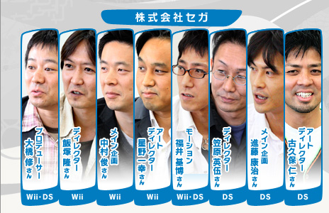
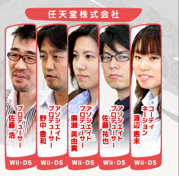
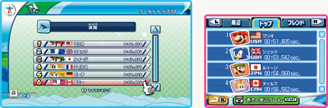
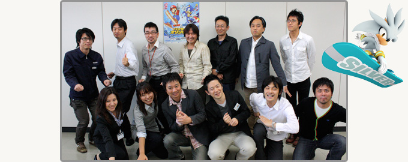

――
それでは最後に読者の皆さんにメッセージを。
佐藤祐：
みんなで遊ぶと楽しいゲームですが、１人で遊ばれる方もいらっしゃると思います。その際は、Wii版、DS版どちらもぜひWi-Fiランキングに挑戦していただきたいと思います。北京の時も世界中の多くの方々がコンマ数秒で競い合っていました。今回もまた熱い戦いを楽しんでいただければと思います。

渡辺：
Wiiのアルペンで風景を楽しみながら滑ってみたり、DSのアドベンチャーツアーズでマメ情報を集めたりと、オリンピックとは言っても競う以外の単純な気持ちよさや楽しさみたいなものも詰まっています。あと、Wii版のオープニングやフェスティバルモードの開会式や閉会式のムービーもすごく良くって、社内でもセガさんすごいねって私が代わりに褒められてうれしかったりしたんですが、こちらも一度は見ていただければと。
廣瀬：
実は私はゲームがヘタで。アクション要素が強いと思われがちかも知れませんが、そんな私でも、また全然ゲームをしたことがない人でも、いろんな楽しみ方ができるゲームになっていると思います。
佐藤浩：
廣瀬は『マリオパーティ』シリーズのミニゲームすべての難易度設定の基準みたいになっていまして、彼女が遊べないというゲームはダメだということになっているんです。したがってゲームが苦手な方でも楽しめるという意味では、彼女の言葉には非常に説得力があるんで、信じてもらって大丈夫です（一同・笑）。
中村：
ウチの５歳の子供にWii版をテストプレイでやらせてみたことがあったんです。なかなか最初はできないんですけど、実際のスキーでボーゲンをしながら親が子供に実際にやって見せて教えてあげるみたいな感じのコミュニケーションが生まれたんです。ぜひ皆さんにも、親子で楽しんでいただきたいなと思っています。
飯塚：
私はセガに入ってからずっと、それこそメガドライブとスーパーファミコンの時代からソニックばかり作ってきましたので、今回の『マリオ＆ソニック』というのはうれしいというか、ついにこんなゲームが作れるんだという感慨がありました。本当に作っている間も楽しませていただいて、ドリーム競技などではソニックの世界の中にマリオを登場させたり、その逆もあったり、１人のマリオファン、ソニックファンとして、世界中のファンの皆さんにもこのコラボレーションを楽しんでいただければと思います。
星野：
冬季競技はスキーとかスケートなど装備品が多いですよね。ソニックは靴を履いているんですが、クッパとかは裸足なのでどうしよう、足からスケートのブレードが生えてるようにしたらいいのかなと悩んだのも今では良い思い出です。今回のWii版では装備品のカスタマイズができるようになっていまして、ゲームを進めれば進めるほど自分好みのルックスに変更できます。そのあたりも楽しんでいただければ。
福井：
そもそも冬季競技のモーションのストックはまったくない状態からスタートしたんですが、目標としては世界で一番のモーションを作ろうということを合言葉に頑張りました。またマリオとソニックの２つの世界観があるので、いろいろとハードルは高かったんですが、良いところに落とし込めたんじゃないかなと思いますし、自分にとっても自信になりました。そういったモーションの部分にも、ご注目いただければと思います。
進藤：
DS版では通信対戦もさらにパワーアップしていまして、特にドリーム競技の方はなるべく４人同時にお互い干渉し合いながらプレイできるというところを目指して作りました。ソフトが１本あれば他の３人もプレイできますし、友だちや家族とプレイしていただけると盛り上がるんじゃないかなと思います。
古久保：
私にとっては、開発中のチェックプレイがかなり熱く楽しかったタイトルでした。他のスタッフと対戦して負けた時には、業務関係なくコッソリ練習を重ねたりもしました。それだけに自信を持って皆さんにオススメできるゲームですので、ぜひ楽しんでいただければと思います。
笠原：
DS版のお話ですが、グラフィックに関してはDSの性能をフルに引き出せたと思いますし、ボリュームに関しても「アドベンチャーツアーズ」をはじめ、冬季の全競技を収録することもできています。Wii版もDS版も、それぞれの冬季五輪を楽しむことができる作りになっていますので、ぜひ両方とも買っていただければと思います（一同・笑）。
野中：
今回はセガさんと任天堂の制作面のコラボレーションという意味でも最初から関わることができましたので、われわれもいろんな意味で勉強になって、スケジュール的には厳しいものがありましたが、お互いに妥協することなく、本当に良い着地点に落ち着くことができたゲームになったと思っています。冬季オリンピックは比較的マイナーだと言われていますが、Wii版もDS版とも敷居は低くなっていますし、マリオとソニックの共演を通していろんな競技を知っていていただいて、家族みんなで楽しんでいただければと思います。
佐藤浩：
私はアスリートにしか味わえないだろうスタートする時の緊張感みたいなものを、このゲームから感じています。選手としてやったことがない競技を、素人でも体験することができるわけです。また今回はWii版もDS版もまったくケチをしていません。１人で遊ぶ緊張感から、パーティの楽しさまで、全部味わうことができるのがこの２本の特徴だと思っています。
大橋：
通常は５色の五輪マークなんですけど、今回のバンクーバーでは青１色のマークが使われる予定です。それ以外のマークやグラフィック、地形なども本物と同じものを使っています。２月に実際のオリンピックがはじまりましたら、実際のテレビの映像の中で、このパッケージやゲームの中に出てきた新しい五輪マークやスタジアムの風景を再確認したり、また逆にテレビで見たコースをゲームで楽しむということもできると思います。
――
ありがとうございました。
